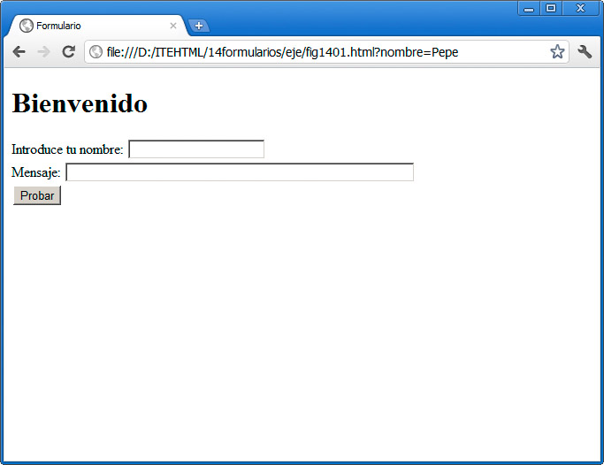
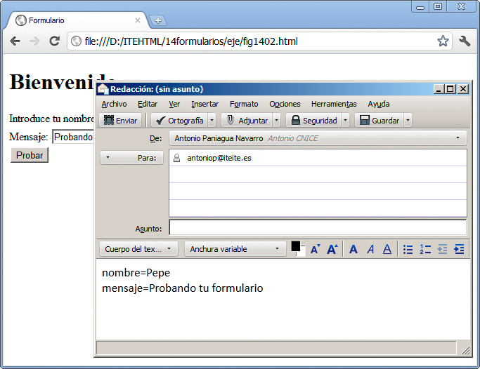

Las páginas más completas y más complejas suelen contar con algún grado de interactividad. Esa interactividad comienza por recoger alguna operación que realiza el usuario y responderle de algún modo. El ejemplo más claro de esto es el uso de formularios, para realizar una recogida de datos que el navegador mandará por correo electrónico o que se almacenarán en una base de datos en el servidor, para que a su vez puedan ser procesados.
Para poder gestionar la información, remitida mediante el servidor y una base de datos, necesitaremos conocimientos avanzados de otras tecnologías que se ejecutan en el lado del servidor, lo que excede a los propósitos de este material. No obstante, sí podremos avanzar en el diseño de formularios, para enviar información por correo o para realizar algunas interacciones mediante JavaScript.
Insertar un formulario
La creación de un formulario se realiza mediante la etiqueta <form> y su correspondiente </form>. Así generamos un bloque dentro del cual podemos introducir todos los contenidos que queramos: tablas, imágenes, etc. También incluiremos en su interior diferentes elementos HTML orientados a esa recogida de datos.
Probemos con un ejemplo elemental. Incorporaremos este texto en el <body> de una página vacía:
<form name="miformulario">
<h1>Bienvenido</h1>
Introduce tu nombre: <input type="text" name="nombre" />
<br />Mensaje: <input name="mensaje" type="textarea" size="60" />
<br /><input type="submit" value="Probar" />
</form>
Al probar esta página, se obtiene el resultado de la figura:

El formulario incluye un sencillo título y dos elementos de formulario: un cuadro de texto y un botón de envío.
Opciones de formulario
Nuestro formulario no tiene programada ninguna acción. Cuando se pulsa el botón Probar, no sucede nada. Se puede modificar el comportamiento del formulario y algunas opciones más mediante parámetros.
El parámetro action se acompaña de una URL que indica a dónde se saltará cuando el usuario pulse en el botón de envío (el botón de tipo submit, como veremos más tarde). Un formulario como el nuestro se podría remitir por correo mediante una URL del tipo mailto así:
<form name="miformulario" action="mailto:antoniop@iteite.es" method="post" enctype="text/plain">
y obtendríamos el resultado de la figura, donde se despliega la aplicación de correo que el usuario tiene configurada para remitirnos nuestro formulario por correo electrónico:

Esta opción de remisión de formularios por correo se emplea poco en la actualidad; obliga al usuario a tener configurada una aplicación de correo. Lo normal aquí sería ejecutar algún script en el lado del servidor que procesase el formulario, lo que, como decíamos anteriormente, no será tratado en este módulo.
Junto a action cada formulario suele tener otros tres parámetros:
- name: especifica un nombre único para el formulario. Es muy importante al ser procesado en el servidor, ya que permite discriminar entre varios formularios, si la página los tuviese.
- method: indica el formato de envío que se va a emplear para el formulario. Tenemos la opción post que remite la información de forma oculta y sin limitaciones de tamaño y, por otro lado, la opción get, que transmite los datos como parte de la URL de la página. El método post suele ser el más recomendable y es el que emplearemos en casi todos los casos.
- enctype: se usa para indicar el formato de codificación de los datos que estamos remitiendo. El valor predeterminado application/x-www-form-urlencoded. text/plain hace que se reemplacen los espacios por el signo +; se emplea para textos sencillos. Si vamos a enviar archivos, fotos, etc. usaremos la codificación multipart/form-data donde ningún carácter se codifica.
Aún hay algunos valores más, como autocomplete (con valores on u off) que decide si al rellenar el formulario se nos harán sugerencias (que es el comportamiento predeterminado) o no. Ponerlo en off es útil para formularios en los que se introducen datos personales. También podemos activar el valor novalidate, para que el formulario no se compruebe antes de enviarlo.
Pregunta de Elección Múltiple
|
Estos parámetros sirven para especificar un nombre único para cada formulario.
| |
|
Sirven para indicar el formato de envío que se va a emplear para el formulario.
| |
|
Sirven para indicar el formato de codificación de los datos que estamos remitiendo.
| |
|
Todas las anteriores son falsas.
|
Actividad 1
Generaremos un pequeño formulario para ir probando los diferentes tipos de campos que se pueden añadir. En el parámetro action optaremos por una acción de envío por correo electrónico, para así poder comprobar los valores que se mandan en cada correo.